なんか興味あればどうぞ！ 新着50件：気に入ったら見て行ってね。 溶接DIYが3Dプリンター買った時と同じくらい衝撃的に面白い! 2022年4月17日 DIY …読む？ 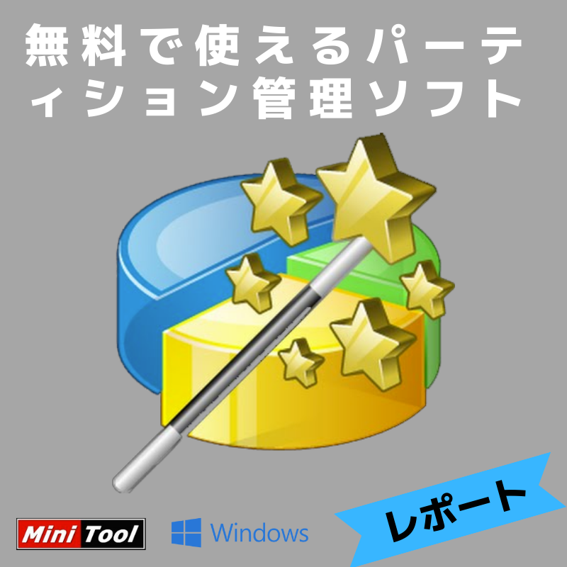 無料（フリー）のパーティションソフトが結構使える！ 2022年1月20日 Win10 …読む？ WordPressをhtmlファイルに出してGitHub Pagesで運用するスタイルが最高 2022年1月16日 Blog, WordPress …読む？ KeyCDNという安いCDNを半年使った感想、価格や月維持費などレポート！ 2022年1月2日 Android, cdn, Linux, WordPress, 高速化 …読む？ 2021/04〜12 site24x7 でのSLA状況・統計データ 2022年1月1日 Android, Linux, WordPress …読む？ TermuxのパッケージPHP7.4.21最新ビルド 2021年7月11日 Android, Linux, WordPress …読む？ 静的HTMLをWordPressから作るには？ 2021年6月26日 Linux, WordPress …読む？ 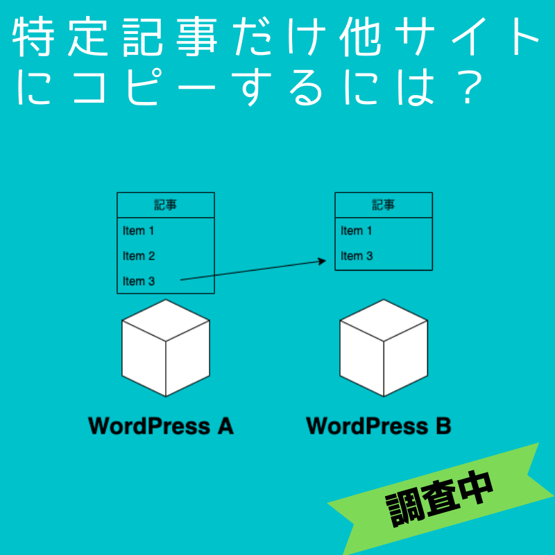 １つ目のWordPressの記事を２つ目のWordPressにコピーするプラグインはどこかに無いかな？ 2021年6月9日 Android, WordPress …読む？ TermuxでPHP7を使いたい！ PHP8からPHP7にして使う。 2021年6月1日 Linux …読む？ Termuxでpkg updateできなくなって困ってる人へ 2021年6月1日 Linux …読む？ 備忘録：Ryzen 5 3600のLinuxでUnixBench 2021年5月30日 Linux, osx …読む？ 工学社 の本、androidの改造 に掲載されたよ！ 2021年5月20日 Android, Linux, WordPress …読む？ TermuxでNGINX+php-fpm+mariadbを動かす具体的な設定例 2021年5月13日 Android, Linux, WordPress …読む？ 2021/03 site24x7 でのSLA状況・統計データ 2021年4月22日 Android, Linux, WordPress …読む？ 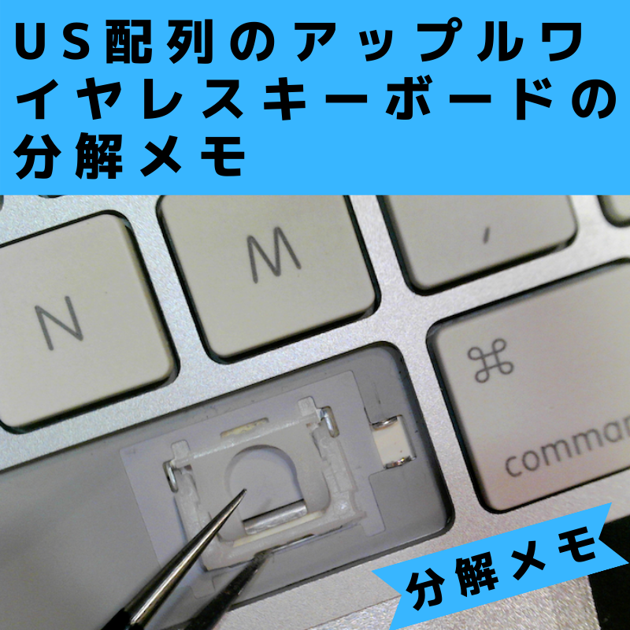 Apple純正のUSキーボードの分解メモ 2021年3月22日 osx …読む？ 6年使ったSSDが突然、認識せず、あれこれした記録 2021年3月15日 AMZON, osx …読む？ 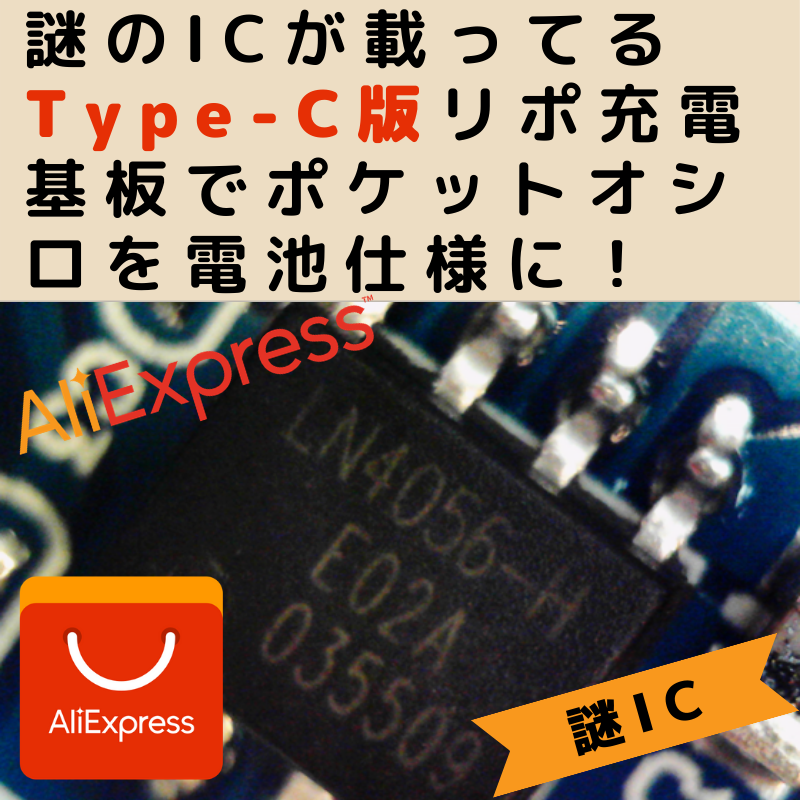 謎のICが載ったType-Cリポ充電基板でポケットオシロを電池仕様に！ 2021年3月9日 DIY …読む？ 2021/02 site24x7 でのSLA状況・統計データ 2021年3月5日 Android, Linux, SLA, WordPress …読む？ XIAOでMacのスクリーンショット専用USBキーを作るDIY 2021年3月1日 arduino, DIY, osx, WordPress …読む？ XIAOとスマホだけでnode.jsのJohnny-Fiveを動かす最短コースをご案内！ 2021年2月26日 Android, DIY, Linux …読む？ 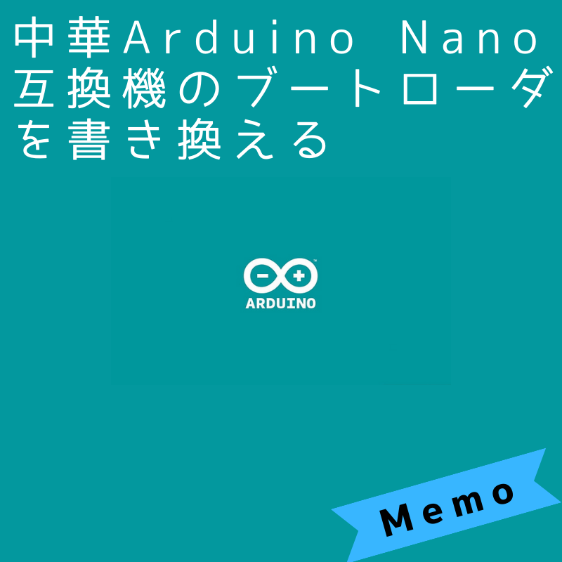 Arduino Nano互換機に書き込めないだと！ 2021年2月23日 arduino, DIY …読む？ 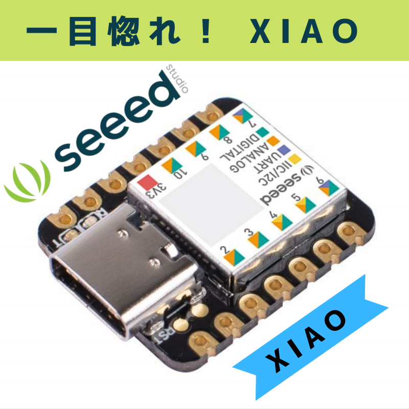 久しぶりに一目惚れしたArudio互換機のSeeeduino XIAO 2021年2月20日 arduino, DIY, Parts …読む？ リポ充電基盤のType-C版が出てたんでポチった！ 2021年2月20日 Aliexpress, DIY, Parts …読む？ MQAは実際に体感できるほどの高音質なのか？ 2021年2月14日 music …読む？ 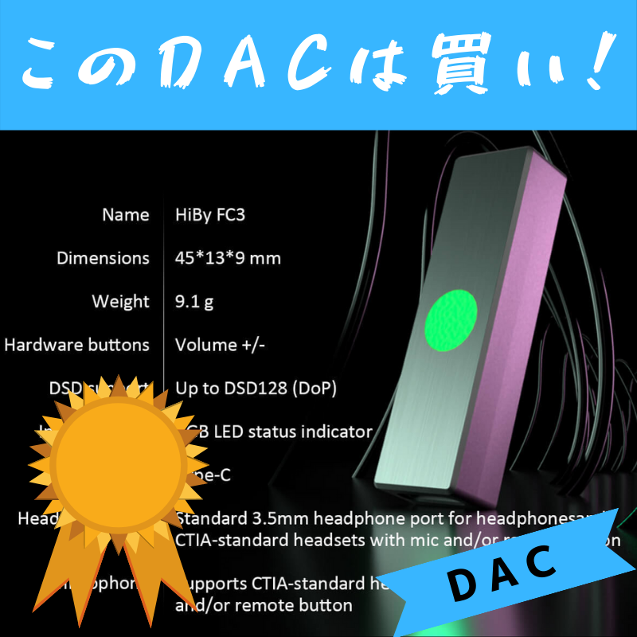 MQAレンダリングできる世界一安いDACを買ったよ！Hiby FC3 Portable MQA USB DAC 2021年2月8日 music …読む？ 2021/01 site24x7 でのSLA状況・統計データ 2021年2月7日 Android, Linux, SLA, WordPress …読む？ ハイレゾ？それどころか、AAC320KbpsとFlac16bit/44.1khzも僕は区別がつかないよ！ 2021年2月1日 music …読む？ ライブとかで使われてるElectro-VoiceのSXシリーズをゲット！ 2021年1月22日 music …読む？ 2020/11と12 site24x7 でのSLA状況・統計データ 2021年1月17日 Android, Linux, SLA, WordPress …読む？ 内部DNSをTermuxのDNSMASQで動かす！ 2020年11月7日 Android, Linux, WordPress …読む？ 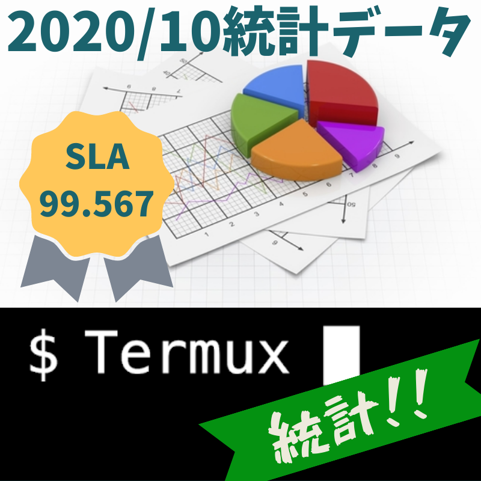 2020/10 site24x7 でのSLA状況など統計データ 2020年11月4日 Android, Linux, SLA, WordPress …読む？ Umidigi F2 をroot化したよ！ 2020年10月31日 Android, Linux, WordPress …読む？ メルカリ８８０円のルータに組み込みLINUXのOpenWrtで内部DNSを動かす！ 2020年10月26日 Android, Linux, WordPress …読む？ D.J.BツールのdaemontoolsをTermuxで動かしてみたよ！ 2020年10月22日 Android, Linux, WordPress …読む？ 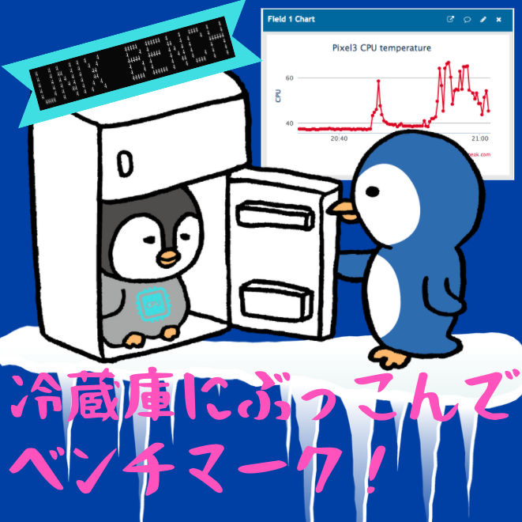 スマホを冷蔵庫に入れて冷え冷え状態でベンチマークしたらどうなる？ 2020年10月9日 Android, Linux, WordPress …読む？ TermuxスマホのCPU温度をThingSpeakでリアルタイム・グラフにしてみた！ 2020年10月8日 Android, Linux, WordPress …読む？ まだ広告で消費してるの？ 知らないと損!! NextDNSを今すぐ設定して楽になろう！ 2020年10月6日 Android, Linux, WordPress …読む？ Pixel3・android11(R)正式リリース版でroot化！ 2020年10月5日 Android, Linux, WordPress …読む？ 備忘録：Termuxで、Pixel3のUnixBench 2020年10月3日 Android, Linux, WordPress …読む？ Termuxからメールを送れるようにするには？ 2020年9月30日 Android, Linux, WordPress …読む？ 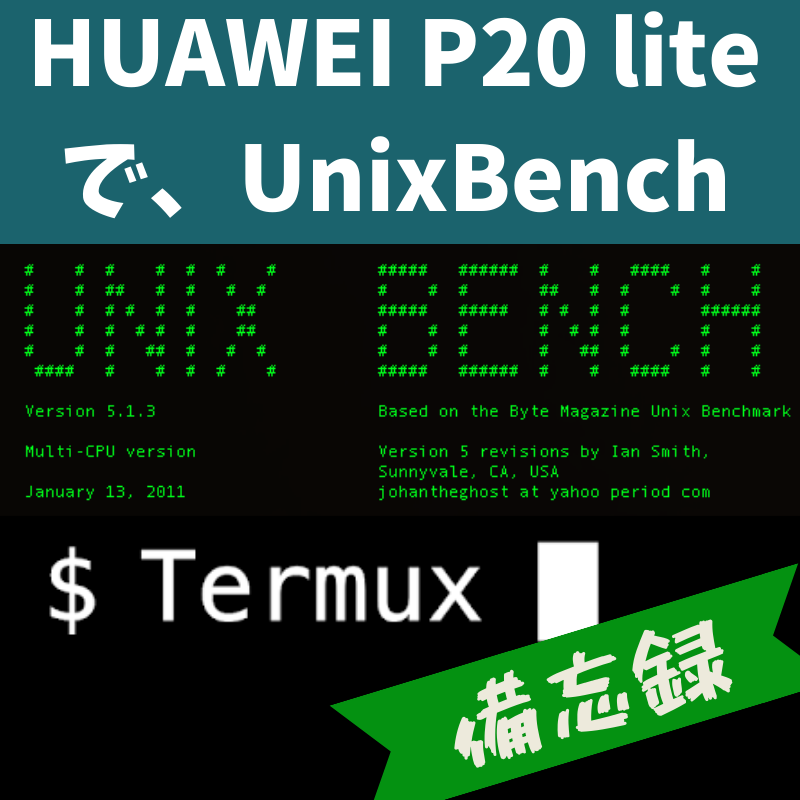 備忘録：Termuxで、 HUAWEI P20 liteのUnixBench 2020年9月28日 Android, Linux, WordPress …読む？ Termuxネイティブ環境でWordPressのバックアップをどうするか考える。その３ 2020年9月28日 Android, Linux, WordPress …読む？ 稼働率・SLA99.95%をスマホ自宅サーバで目指せ！まずは１ヶ月間 2020年9月25日 Android, Linux, WordPress …読む？ Termuxネイティブ環境でWordPressのバックアップをどうするか考える。その２ 2020年9月25日 Android, Linux, WordPress …読む？ Termuxネイティブ環境でWordPressのバックアップをどうするか考える。その１ 2020年9月24日 Android, Linux, WordPress …読む？ 無料の外部から監視するサービスを使って見た！site24x7 2020年9月21日 Android, Linux, WordPress …読む？ 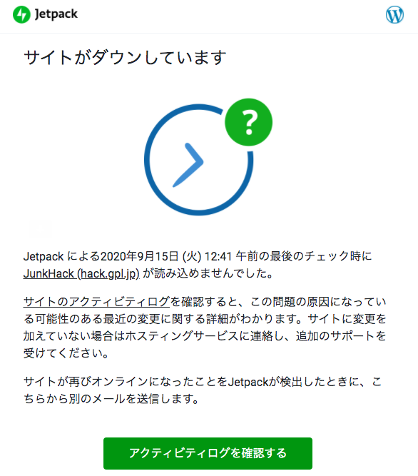 ジェットパックプラグインは死活監視サービスがあるのか！ 2020年9月18日 Blog, WordPress …読む？ このブログは、スマートフォンの中に引越ししました！ 2020年9月18日 Android, Blog, Linux, WordPress, 新ブログ …読む？ WordPressのコマンドラインツール、wp-cliを使ってみたら便利だった！ 2020年9月14日 Android, Linux, WordPress …読む？ 備忘録：設定ファイルの空白行（改行）とコメントを削除して表示したい 2020年9月14日 新ブログ …読む？